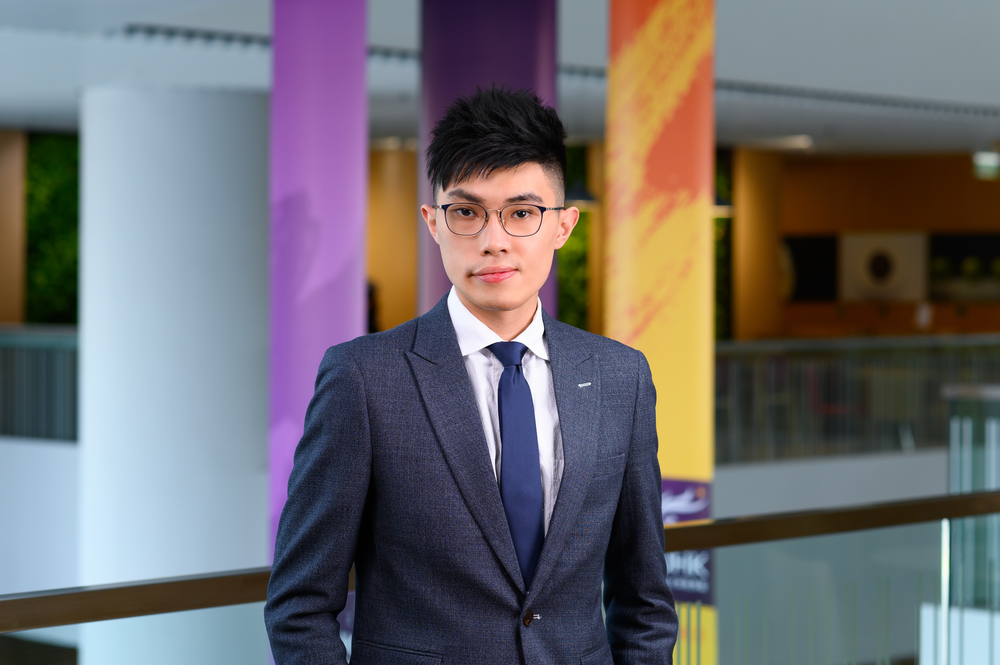

Roy Yu

Summary
Experienced in aviation and F&B industry, project management, operations
management and digital solution.
Likewise, equipped with the knowledge of Arts in English language and
literature - two degrees holding in HKU (Bachelor of Arts “B.A.”) majoring
in English Studies and Sociology) and CUHK (Master of Arts “M.A.” in
Literary Studies).
Currently in pursuit of Master of Business Administration “MBA” in CUHK.
My career goal is to pursue a challenging vision in an agile and
progressive organization that enables me to horn my skills, expand my
knowledge and, in return, contribute values.
I regard myself as a tech-lover, and expect to absorb more knowledge of
various applications as my mid-term goal.
Work Experience
-
Project Manager / Scrum Master - Pernod Ricard (TEK system as
consultant)
Oct 2021 - present
-
Lead end-to-end implementation of Sales Tech products in agile
delivery toAPAC 10+ regions
-
Revamp the CRM platform with 111M+ sales volume and 29,070
ordertransaction (FY2122)
-
Manage a scrum team of 2-3 developers, 1 Tech Lead in design
anddevelopment
-
Collaborate with other internal parties for system integration -
RESTful API,ETL implementation (CRM, ERP, Azure) to achieve a
scalable and composablearchitecture
-
Assistant Manager, Project Management Office - FUJIFILM Business
Innovation
Jan 2020 - Oct 2021
-
Managed multiple Customer Communciation Management (CCM) projects
-
Coordinated with Assistant PM, BA and technical team to achieve
projectmilestones
-
Established basic project control standard and model for each
project stagespecific to CCM services features
-
Assistant Manager, Special Projects - Maxim’s Group
Jan 2020 - Oct 2021
- Managed new restaurant opening projects for MX franchises
- Reported to Director of Special Project for project progress
-
Senior Resources Planning Officer - Cathay Pacific Catering Services
(H.K.) Ltd
Aug 2014 - Jun 2019
-
Acted as Project Manager role to run for the development of
Workforce Management System for full-automation in rostering for
2000+ staff
-
Restructured labour demand planning based on budgeting and
businessforecasting data
-
Led change management activities in full cycle (training, UAT
workshops, staffcommunication) to engage stakeholders
- Started with 2-year Supervisor Trainee Program in 2014
Education History
-
Master of Business Administration (MBA) | Sep 2020 - Aug 2022 - The
Chinese University of Hong Kong
-
Master of Arts (Literary Studies) | Sep 2016 - May 2018 - The Chinese
University of Hong Kong
-
Bachelor of Arts | Sep 2011 - May 2014 - The University of Hong Kong
Skills
Project Management
- MS Project: ⭐️⭐️⭐️
- JIRA / Confluence: ⭐️⭐️⭐️⭐️
Data Visulization
Programming Skills
Software Applications/Cloud
Awards and Certifications
- Microsoft Certified AI Fundamentals AI-900 - Jun 2023
- Microsoft Certified Data Fundamentals DP-900 - May 2023
- Microsoft Certified Azure Fundamentals AZ-900 - Feb 2023
- Machine Learning Foundations for Product Manager - Apr 2023
- Scrum Master Certified - Jun 2020
- ITIL - May 2020
- Project Management Professional - Mar 2020
Others